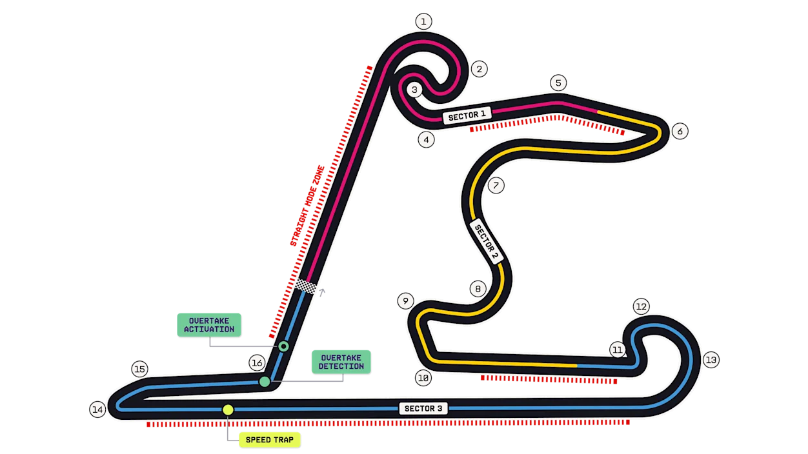

<!doctype html><html lang="zh-CN"><meta charset="utf-8"><meta name="viewport" content="width=device-width,initial-scale=1"><title>FrankPitwall · 原生界面演示</title>
<style>
*{box-sizing:border-box}body{margin:0;background:#eae6e0;color:#181818;font:14px "Microsoft YaHei",sans-serif}main{width:min(100%,430px);min-height:100dvh;margin:auto;background:#faf9f6;padding-bottom:68px}header,.in,.row,nav{padding-inline:16px}header{border-top:3px solid #d62819;padding-top:14px;padding-bottom:12px}h1,h2,p{margin:0}h1{font-size:26px}h2{font-size:18px}button{font:inherit;color:inherit;border:0;background:none;cursor:pointer;min-height:42px}button:focus-visible{outline:2px solid #c72218;outline-offset:-2px}.title,.meta,.row,.controls,.stats{display:flex;align-items:center;gap:10px}.title h1,.grow{flex:1}.red,.on{color:#b92317}.tag,small{color:#625c55;font-size:11px}.meta{justify-content:space-between;margin-top:8px;flex-wrap:wrap}.clock{display:flex;align-items:baseline;gap:7px;font-family:monospace}.clock b{font-size:24px;letter-spacing:-1px;font-variant-numeric:tabular-nums}.clock i{display:block;background:#cf281d;width:4px;height:4px;border-radius:50%;align-self:center}.clock small{font-size:9px}.tabs,.segments{display:flex;gap:16px;overflow:auto;white-space:nowrap}.tabs{border-bottom:1px solid #ded8d1}.tabs .on{box-shadow:inset 0 -2px #ce291d;font-weight:bold}.controls{justify-content:space-between}.segments button{font-size:12px;padding:0}.segments .on{font-weight:bold}.row{width:100%;text-align:left;min-height:64px;border-bottom:1px solid #e7e0d8}.row img{width:35px;height:44px;object-fit:contain}.row i{width:3px;height:26px;background:var(--team,#c7271e)}.row small,.stats small{display:block;margin-top:4px}.row code{font-weight:bold}.caption{display:flex;justify-content:space-between;padding-block:8px;border-bottom:1px solid #d8cfc5}.pad{padding-block:14px}.cta{background:#b92317;color:white;border-radius:6px;padding-inline:16px;font-weight:bold;margin-top:10px}.bottom{position:fixed;bottom:0;width:min(100%,430px);background:#faf9f6;border-top:1px solid #ded8d1;display:flex;justify-content:space-around;z-index:1}.bottom button{min-height:55px}.demo{padding:12px 16px;color:#625c55;font-size:11px}.stats{justify-content:space-between;gap:6px;padding-block:14px}.stats b{font:700 23px monospace}.dot,.line{display:block;background:#e3dcd3;border-radius:4px;animation:pulse 1.5s ease-in-out infinite alternate}.dot{width:32px;height:32px;border-radius:50%}.line{height:10px;width:60%;margin:6px 0}@keyframes pulse{to{opacity:.48}}@media(prefers-reduced-motion:reduce){.dot,.line{animation:none}}.hero{display:flex;align-items:end;justify-content:space-between}.hero img{width:86px;height:92px;object-fit:contain}

#screen[data-view=home] header:first-child,#screen[data-view=rank] header{border-top:0}
#screen[data-view=home] header:nth-child(2){position:relative;isolation:isolate;background:#211b1a;color:#fff;padding-block:20px;overflow:hidden}
#screen[data-view=home] header:nth-child(2) .tag,#screen[data-view=home] header:nth-child(2) small{color:#f0c1b7}
#screen[data-view=home] header:nth-child(2) .title,#screen[data-view=home] header:nth-child(2) .meta{position:relative}
.circuit{display:flex;justify-content:space-between;align-items:center;gap:12px;margin-top:14px;color:#f3ddd8}.circuit img{width:115px;height:65px;object-fit:contain;border-radius:5px;background:#f9f5ee}.eyebrow{display:block;font:700 10px monospace;letter-spacing:.13em;color:#a12b21;margin-bottom:7px}.circuit .eyebrow{color:#f5b4a6}.index{font:700 11px monospace;color:#a93b30}.home-session{gap:15px}
.leader{margin:0 16px 12px;padding:14px;background:#f3e6d7;display:flex;align-items:center;gap:10px;text-align:left;width:calc(100% - 32px);border-left:3px solid #da711c}.leader img{width:56px;height:60px;object-fit:contain}.leader strong{font:700 25px monospace}.leader small{display:block}.rank-meter{display:block;width:85%;height:3px;margin-top:6px;background:#eee6dc}.rank-meter span{display:block;height:100%;background:var(--team)}.leader .grow{min-width:0}
#screen[data-view=driver] header{background:linear-gradient(110deg,#fbf5eb,#eddbcb);border-color:var(--accent,#d62819);overflow:hidden}.hero{position:relative;min-height:134px}.hero>div{z-index:1}.hero img{width:124px;height:134px;object-fit:contain;z-index:1}.driver-no{position:absolute;right:5px;bottom:-15px;font:italic 900 112px monospace;color:#49271114;line-height:1}.stats{border-bottom:1px solid #ded8d1;margin-bottom:16px}.stats>div{flex:1}.stats>div+div{border-left:1px solid #ded8d1;padding-left:12px}.stats b{color:#a92a1d}
.bottom .on{font-weight:700;box-shadow:inset 0 2px #c62519}.row:active,.leader:active{background:#eee5da}.row,.leader{transition:background-color .14s ease}.mini{font-size:10px;color:#685b51}

@keyframes arrive{from{opacity:0;transform:translateY(7px)}to{opacity:1;transform:translateY(0)}}
@keyframes portrait-in{from{opacity:0;transform:translateX(12px)}to{opacity:1;transform:translateX(0)}}
@keyframes meter-in{from{transform:scaleX(0)}to{transform:scaleX(1)}}
@keyframes selection-in{from{opacity:.5}to{opacity:1}}
#screen[data-motion=page]{animation:arrive 190ms ease-out both}
#screen[data-motion=page] .circuit img,#screen[data-motion=page] .hero img{animation:portrait-in 260ms cubic-bezier(.2,.7,.3,1) both}
#screen[data-motion=page] .rank-meter span{transform-origin:left;animation:meter-in 360ms cubic-bezier(.2,.7,.3,1) both}
#screen[data-motion=session] .caption,#screen[data-motion=session] .row{animation:selection-in 160ms ease-out both}
.bottom button:active,.segments button:active,.cta:active{transform:scale(.97)}
.bottom button,.segments button,.cta{transition:transform 110ms ease-out,background-color 140ms ease-out}
@media(prefers-reduced-motion:reduce){#screen,#screen *{animation:none!important;transition:none!important}.bottom button,.segments button,.cta{transition:none;transform:none!important}}

.duel-tools{display:flex;gap:8px;overflow:auto;padding:10px 0}.duel-tools button{flex:none;display:flex;align-items:center;gap:5px;padding:0 8px;border-radius:6px;background:#f0ebe5}.duel-tools button[aria-pressed=true]{background:#fae1da;color:#97271e}.duel-tools img{width:22px;height:28px;object-fit:contain}.duel-tools em{font:700 10px monospace}.chart{display:block;touch-action:pan-y;cursor:crosshair}.chart:focus-visible{outline:2px solid #b92317}.reading{display:flex;justify-content:space-between;gap:12px;margin:8px 0;padding:10px 12px;background:#eee8e1;border-left:3px solid #b92317}.reading span{font:700 12px monospace}.stint{display:grid;grid-template-columns:1fr 1fr;gap:6px;padding-block:10px;border-bottom:1px solid #e4dcd3}.stint small{text-align:right}

.plot-panel{margin-top:8px;background:#211c1b;color:#fff5ed;padding:12px 12px 0;border-radius:10px}
.plot-panel .reading{margin:0 0 5px;padding:0 0 8px;background:transparent;border:0;align-items:center}
.plot-panel .reading b{font:700 16px monospace}.plot-panel .reading span{color:#f4cab5}
.plot-panel .chart{margin-inline:-2px;width:calc(100% + 4px)}
.plot-panel .stats{margin:0;padding:10px 0;border-top:1px solid #493c36;border-bottom:0}
.plot-panel .stats>div+div{border-left-color:#493c36}
.plot-panel .stats small{color:#e0c9bc}.plot-panel .stats b{font-size:21px}
.plot-hint{display:block;padding:8px 0 13px}
</style>
<main><div id="screen"></div><div class="demo">界面演示 · 成绩、积分和档案数字均为示例</div><nav class="bottom" aria-label="演示页面"></nav></main>
<script>
const data=[
 ['诺里斯','McLaren','norris','#ee8128','91.421',44],
 ['勒克莱尔','Ferrari','leclerc','#e52b21','91.553',38],
 ['安东内利','Mercedes','kimi_antonelli','#00a890','91.684',29],
 ['贝尔曼','Haas','bearman','#888','91.810',22],
 ['博托莱托','Sauber','bortoleto','#479954','91.935',16]
];
const photos='../../../public/images/drivers/';
const views={home:'赛事',race:'成绩',rank:'榜单',driver:'档案'};
const sessions=['一练','冲刺排位','冲刺','排位','正赛'];
let view='race',section=1,session=0,driver=0,loading=false,careerYear=2025, analysisTab=0, sampleIndex=0, duel=[0,1];
const screen=document.querySelector('#screen'), bottom=document.querySelector('.bottom');
const btn=(label,handler,on=false)=>'<button class="'+(on?'on':'')+'" onclick="'+handler+'">'+label+'</button>';
function show(next){if(view===next)return;view=next;loading=false;render("page");window.scrollTo(0,0);}
function raceHeader(back){return '<header><div class=title>'+(back?btn('‹','show(\'home\')'):'')+'<h1>中国大奖赛</h1><b class="tag red">2025 / R02</b></div><div class=meta><span class=tag>上海国际赛车场</span><div class=clock><b>03.23</b><i></i><b>15:00</b><small>UTC+8</small></div></div></header>';}
function list(rank=false){return data.map(([name,team,id,color,timing,points],i)=>'<button class=row style="--team:'+color+'" onclick="driver='+i+';show(\'driver\')"><strong>'+(i+1)+'</strong><i></i><span class=grow><b>'+name+'</b><small>'+team+'</small></span><code>'+(rank?points+' 分':(Number(timing)+session*.118).toFixed(3)+' s')+'</code></button>').join('');}
const analysisSets=[
 {name:'圈速',unit:'s',labels:['L12','L13','L14','L15','L16'],series:[['诺里斯',[94.2,93.8,93.4,93.5,93.1]],['勒克莱尔',[94.4,94.1,93.8,93.6,93.4]]]},
 {name:'名次',unit:'名',reverse:true,labels:['L1','L5','L10','L15','L20'],series:[['诺里斯',[3,3,2,2,1]],['勒克莱尔',[2,2,3,3,3]]]},
 {name:'轮胎',rows:[['诺里斯','中性胎 L1–18 · 硬胎 L19–56'],['勒克莱尔','中性胎 L1–20 · 硬胎 L21–56']]},
 {name:'遥测',unit:'km/h',labels:['0.2 km','0.6 km','1.0 km','1.4 km','1.8 km'],series:[['诺里斯',[221,287,309,164,255]],['勒克莱尔',[217,281,304,171,259]]]},
 {name:'天气',unit:'°C',labels:['14:00','14:15','14:30','14:45','15:00'],series:[['赛道',[29,30,32,32,31]],['气温',[22,23,24,24,23]]]},
 {name:'进站',rows:[['诺里斯 · L18','停车 2.31 s · 维修区通过 23.84 s'],['勒克莱尔 · L20','停车 2.48 s · 维修区通过 24.10 s']]}
];
function toggleDuel(index){
 if(duel.includes(index))duel=duel.filter(x=>x!==index);
 else duel=[...duel.slice(-1),index];
 render();
}
function duelSeries(set){
 return duel.map((index)=>{
  const baseline=set.series[index%2][1], offset=Math.floor(index/2);
  const points=baseline.map((value,i)=>{
   if(set.unit==='名')return Math.max(1,value+offset*2);
   if(set.unit==='km/h')return value-offset*(3+i%2);
   return Number((value+offset*(.23+i*.04)).toFixed(3));
  });
  return [data[index][0],points];
 });
}
function analysisPanel(){
 const set=analysisSets[analysisTab], colors=['#ff805d','#6bd5c3'];
 const tabs='<div class="in segments" aria-label="分析项目">'+analysisSets.map((item,i)=>btn(item.name,'analysisTab='+i+';sampleIndex=0;render()',i===analysisTab)).join('')+'</div>';
 if(set.rows)return tabs+'<div class="in pad"><h2>'+set.name+'</h2><small>演示数据</small></div>'+set.rows.map(([title,detail])=>'<div class=row><div><b>'+title+'</b><small>'+detail+'</small></div></div>').join('');
 const comparable=analysisTab!==4;
 const series=comparable?duelSeries(set):set.series;
 const selector=comparable?'<div class=duel-tools aria-label="选择对比车手">'+data.map(([name,team,id],i)=>'<button aria-pressed="'+duel.includes(i)+'" onclick="toggleDuel('+i+')">'+name+(duel.includes(i)?'<em>'+ (duel.indexOf(i)+1)+'</em>':'')+'</button>').join('')+'</div>':'';
 const header=tabs+'<div class="in pad"><span class=eyebrow>RACE ANALYSIS</span><h2>'+set.name+'对比</h2><small>演示数据 · '+set.unit+'</small>'+selector;
 if(!series.length)return header+'<p class=pad>选择一位车手查看曲线，选择两位查看差距。</p></div>';
 const values=series.flatMap(([,points])=>points), lo=Math.min(...values), hi=Math.max(...values);
 const x=i=>36+i*65, y=value=>16+(set.reverse?(value-lo):(hi-value))/(hi-lo||1)*103;
 const grid=[0,.333,.666,1].map(r=>{const yy=16+r*103; const v=set.reverse?lo+r*(hi-lo):hi-r*(hi-lo);return '<path d="M36 '+yy+'H296" stroke="#54463e" stroke-dasharray="2 4"/><text x="32" y="'+(yy+3)+'" text-anchor="end" font-size="9" fill="#d1baac">'+v.toFixed(set.unit==='s'?1:0)+'</text>';}).join('');
 // Round the approach to each sample without overshooting either endpoint.
 const curve=points=>points.reduce((path,value,i)=>{
  if(i===0)return 'M'+x(i)+' '+y(value);
  const left=x(i-1), right=x(i), reach=(right-left)*.28;
  return path+' C'+(left+reach)+' '+y(points[i-1])+' '+(right-reach)+' '+y(value)+' '+right+' '+y(value);
 },'');
 const paths=series.map(([,points],j)=>'<path class="series-line" fill="none" stroke="'+colors[j]+'" stroke-width="2.25" stroke-linecap="round" d="'+curve(points)+'"/>').join('');
 const area='<defs><linearGradient id="pace-fill" x2="0" y2="1"><stop stop-color="'+colors[0]+'" stop-opacity=".17"/><stop offset="1" stop-color="'+colors[0]+'" stop-opacity="0"/></linearGradient></defs><path fill="url(#pace-fill)" d="'+curve(series[0][1])+' L296 119 L36 119 Z"/>';
 const dots=series.map(([,points],j)=>'<circle class=cursor-dot r="4.5" fill="'+colors[j]+'" stroke="#211c1b" stroke-width="2"/>').join('');
 const axis=set.labels.map((label,i)=>'<text x="'+x(i)+'" y="138" text-anchor="middle" font-size="9" fill="#d1baac">'+label+'</text>').join('');
 const stint=analysisTab===0&&series.length===2?'<h2>分段圈速</h2>'+series.map(([name,points])=>'<div class=stint><b>'+name+'</b><small>中性胎 · L12–16</small><span>平均圈速</span><small>'+ (points.reduce((a,b)=>a+b,0)/points.length).toFixed(3)+' s</small></div>').join(''):'';
 return header+'<div class=plot-panel><div class=reading><b id=sample-label></b><span id=sample-gap></span></div><svg class=chart tabindex="0" viewBox="0 0 320 150" width="100%" role="img" aria-label="趋势图，拖动或使用左右方向键选择采样点">'+grid+area+'<line id=chart-cursor y1="16" y2="119" stroke="#e0bdab" stroke-dasharray="3 4"/>'+paths+dots+axis+'</svg><div class=stats>'+series.map(([name],j)=>'<div><small>'+name+'</small><b class=sample-value style="color:'+colors[j]+'"></b><small>'+set.unit+'</small></div>') .join('')+'</div></div><small class=plot-hint>在图上点按或拖动读数</small>'+stint+'</div>';
}
function bindChart(){
 const chart=screen.querySelector('.chart');
 if(!chart)return;
 const set=analysisSets[analysisTab], series=analysisTab===4?set.series:duelSeries(set);
 const values=series.flatMap(([,points])=>points), lo=Math.min(...values), hi=Math.max(...values);
 function select(index){
  sampleIndex=Math.min(set.labels.length-1,Math.max(0,index));
  const x=36+sampleIndex*65, current=series.map(([,points])=>points[sampleIndex]);
  const cursor=chart.querySelector('#chart-cursor');
  cursor.setAttribute('x1',x);cursor.setAttribute('x2',x);
  chart.querySelectorAll('.cursor-dot').forEach((dot,j)=>{
   dot.setAttribute('cx',x);
   dot.setAttribute('cy',16+(set.reverse?current[j]-lo:hi-current[j])/(hi-lo||1)*103);
  });
  screen.querySelector('#sample-label').textContent=set.labels[sampleIndex];
  screen.querySelector('#sample-gap').textContent=current.length===2?'差距 '+Math.abs(current[0]-current[1]).toFixed(set.unit==='s'?3:0)+' '+set.unit:'';
  screen.querySelectorAll('.sample-value').forEach((node,j)=>node.textContent=current[j].toFixed(set.unit==='s'?3:0));
 }
 function fromPointer(event){
  const rect=chart.getBoundingClientRect();
  select(Math.round(((event.clientX-rect.left)/rect.width*320-36)/65));
 }
 chart.addEventListener('pointerdown',event=>{chart.setPointerCapture(event.pointerId);fromPointer(event);});
 chart.addEventListener('pointermove',event=>{if(event.pointerType==='mouse'||chart.hasPointerCapture(event.pointerId))fromPointer(event);});
 chart.addEventListener('keydown',event=>{if(['ArrowLeft','ArrowRight'].includes(event.key)){event.preventDefault();select(sampleIndex+(event.key==='ArrowRight'?1:-1));}});
 select(sampleIndex);
}
function render(motion=''){
 screen.removeAttribute('data-motion');
 screen.dataset.view=view;
 bottom.innerHTML=Object.entries(views).map(([key,label])=>btn(label,"show('"+key+"')",(view===key || (view==='career' && key==='driver')))).join('');
 if(view==='home') screen.innerHTML='<header><div class=title><h1>FrankPitwall</h1><b class="tag red">赛历</b></div></header>'+raceHeader(false)+'<div class="in pad"><h2>比赛周末</h2><button class=cta onclick="show(\'race\')">查看比赛周末 ›</button></div>'+sessions.map((s,i)=>'<button class=row onclick="session='+i+';section=1;show(\'race\')"><span class=grow>'+s+'</span>›</button>').join('');
 if(view==='rank') screen.innerHTML='<header><div class=title><h1>车手榜</h1><b class="tag red">2025</b></div></header><div class="caption in"><span>名次 / 车手</span><span>积分</span></div>'+list(true);
 if(view==='driver'){
  const [name,team,id]=data[driver];
  screen.innerHTML='<header><div class=hero><div>'+btn('‹ 返回榜单',"show('rank')")+'<h1>'+name+'</h1><small>'+team+' · 车手档案</small></div></div></header><section class="in pad"><h2>生涯汇总</h2><div class=stats><div><b>128</b><small>参赛</small></div><div><b>12</b><small>胜场</small></div><div><b>35</b><small>领奖台</small></div></div><h2>逐年战绩</h2></section><button class=row onclick="careerYear=2025;show(&quot;career&quot;)"><b class=grow>2025</b><small>查看分站战绩 ›</small></button><button class=row onclick="careerYear=2024;show(&quot;career&quot;)"><b class=grow>2024</b><small>查看分站战绩 ›</small></button>';
 }
 if(view==='career'){
  const [name,team,id]=data[driver];
  const races=careerYear===2025?['澳大利亚大奖赛','中国大奖赛','日本大奖赛']:['巴林大奖赛','沙特阿拉伯大奖赛','澳大利亚大奖赛'];
  screen.innerHTML='<header>'+btn('‹ 返回车手档案',"show('driver')")+'<div class=hero><div><span class=eyebrow>SEASON RESULTS</span><h1>'+careerYear+' 赛季战绩</h1><small>'+name+' · '+team+'</small></div></div></header><div class="caption in"><span>分站 · 示例数据</span><span>名次</span></div>'+races.map((race,i)=>'<div class=row><span class=index>R0'+(i+1)+'</span><b class=grow>'+race+'</b><code>P'+(driver+i+1)+'</code></div>').join('');
 }
 if(view==='race'){
  const tabs='<nav class=tabs>'+['概览','成绩','分析'].map((s,i)=>btn(s,'section='+i+';render()',section===i)).join('')+'</nav>';
  const controls='<div class=controls><div class=segments>'+sessions.map((s,i)=>btn(s,'session='+i+';render(&quot;session&quot;)',session===i)).join('')+'</div><small>圈速</small></div>';
  const skeleton='<div class="in pad"><small>正在读取数据</small></div>'+Array.from({length:3},()=>'<div class=row><span class=dot></span><span class=grow><span class=line></span><span class=line style="width:30%"></span></span><span class=line style="width:44px"></span></div>').join('');
  const analysis=section===2?analysisPanel():"";
  const overview='<div class="in pad"><h2>周末日程</h2></div>'+sessions.map((s,i)=>'<button class=row onclick="session='+i+';section=1;render()"><span class=grow>'+s+'</span>查看成绩 ›</button>').join('');
  screen.innerHTML=raceHeader(true)+tabs+(section===0?overview:section===2?analysis:controls+(loading?skeleton:'<div class=caption><span>名次 / 车手</span><span>最快圈速</span></div>'+list())+'<div class=in>'+btn(loading?'结束等待演示':'演示等待动画','loading=!loading;render()')+'</div>');
 }
 if(view==='home'){
  screen.querySelector('header:nth-child(2)').insertAdjacentHTML('beforeend','<div class=circuit><div><span class=eyebrow>SHANGHAI / CHN</span><b>上海赛道</b></div></div>');
  screen.querySelectorAll('.row').forEach((row,i)=>{row.classList.add('home-session');row.insertAdjacentHTML('afterbegin','<span class=index>0'+(i+1)+'</span>');});
 }
 if(view==='rank'){
  const [name,team,id,,,points]=data[0];
  screen.querySelector('header').insertAdjacentHTML('afterend','<button class=leader onclick="driver=0;show(&quot;driver&quot;)"><span class=grow><span class=eyebrow>榜首 · P01</span><b>'+name+'</b><small>'+team+'</small></span><span><strong>'+points+'</strong><small>积分</small></span></button>');
  screen.querySelectorAll('.row .grow').forEach((cell,i)=>cell.insertAdjacentHTML('beforeend','<span class=rank-meter aria-hidden=true><span style="width:'+Math.round(data[i][5]/points*100)+'%"></span></span>'));
 }
 if(view==='driver'){
  screen.querySelector('header').style.setProperty('--accent',data[driver][3]);
  screen.querySelector('.hero').insertAdjacentHTML('afterbegin','<span class=driver-no aria-hidden=true>'+[4,16,12,87,5][driver]+'</span>');
  screen.querySelector('.hero h1').insertAdjacentHTML('beforebegin','<span class=eyebrow>DRIVER PROFILE</span>');
 }

 bindChart();
 if(motion){ void screen.offsetWidth; screen.dataset.motion=motion; }
}
render();
</script></html>
